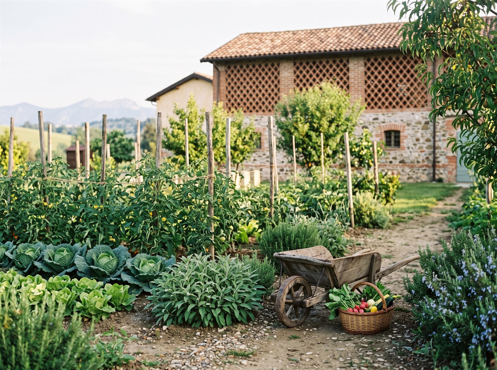
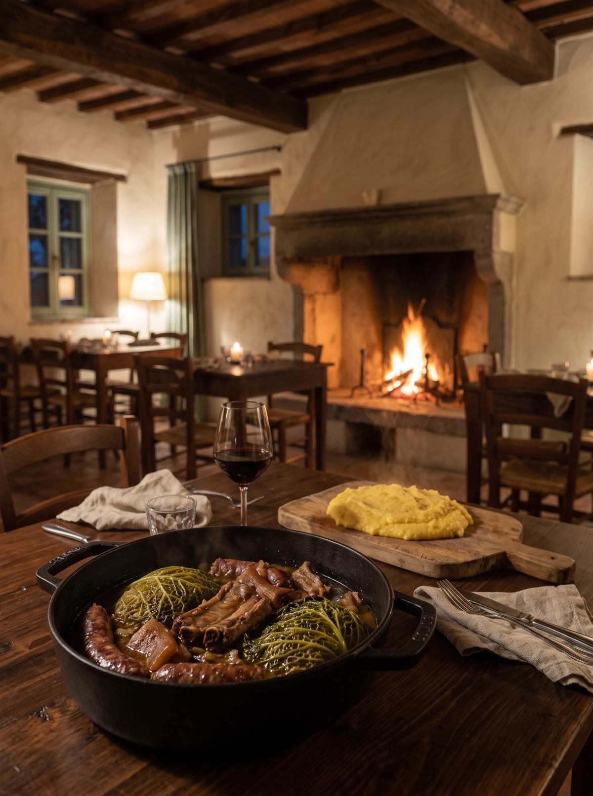

III L'Osteria
A tavola, pian pianin.
Tavoli di noce, il camino acceso da ottobre ad aprile, il pergolato d'estate. Cuciniamo le ricette della Brianza con quello che dà l'orto e con quello che portano i vicini.
La carta
Cucina brianzola · cambia con le stagioni
di stagione = in carta questo mese
Per cominciare
Mondeghili
Polpette di bollito, dorate nel burro, con salsa verde
9Busecca
Trippa in brodo con fagioli borlotti, salvia e grana
13Risòtt giald cont la luganega
Risotto allo zafferano con la luganega di Monza
15Dal camino
Cassœula
Verza e tagli poveri di maiale, cotti a lungo, con polenta
20Rostìn negàa
Nodino di vitello "annegato" nel vino bianco e rosmarino
22Brasàa cont la polenta
Manzo brasato al rosso, polenta macinata a pietra
19Per finire
Torta de pan
La torta paesana: pane raffermo, latte, cacao, amaretti, uvetta
6Pan de mej
Pan di miglio con fiori di sambuco e panna fresca
7Castegn e mièl
Castagne del bosco, miele della tenuta, gelato al fiordilatte
7Segnalateci allergie e intolleranze: il menù si adatta, la tradizione no.


L'orto
Verze, zucche, erbe aromatiche, pomodori d'estate. Quello che non cresce qui, in carta non c'è.
Le arnie
Il miele di acacia, castagno e millefiori finisce nei dolci, nelle salse e sul formaggio stagionato.
I vicini
Farine macinate a pietra, formaggi delle valli, la luganega del macellaio di paese, il vino delle colline intorno.
Pranzi di famiglia,
tavolate, feste
Per gruppi oltre le dodici persone componiamo un menù su misura, anche in esclusiva per la sala del camino.
Cerimonie ed eventi